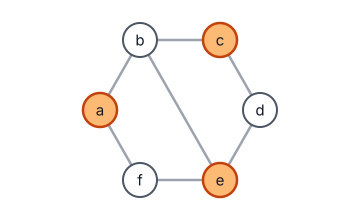
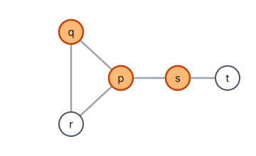
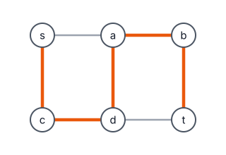
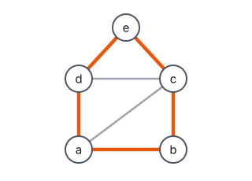
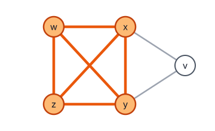

Problem 1


Give a many-one reduction showing $\mathsf{IndSet} \leq_p \mathsf{VertexCover}$.
Problem 2


Give a many-one reduction showing $\mathsf{RudrataPath} \leq_p \mathsf{RudrataCycle}$.
Problem 3

Give a many-one reduction showing $\mathsf{IndSet} \leq_p \mathsf{Clique}$, where $\mathsf{IndSet}$ is defined in Problem 1.